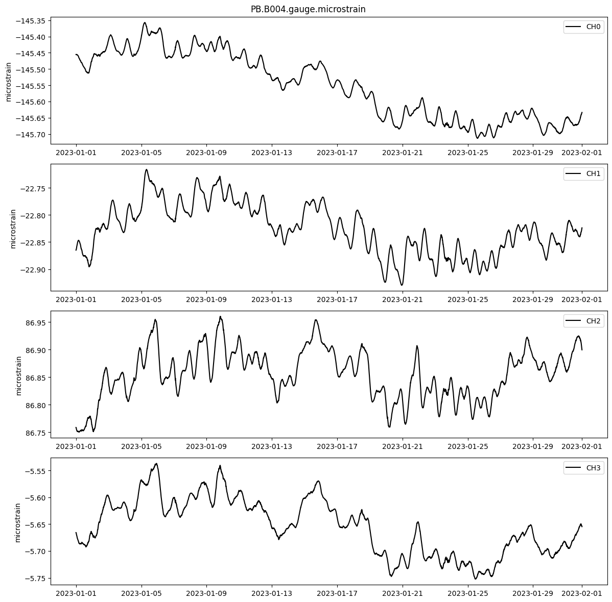
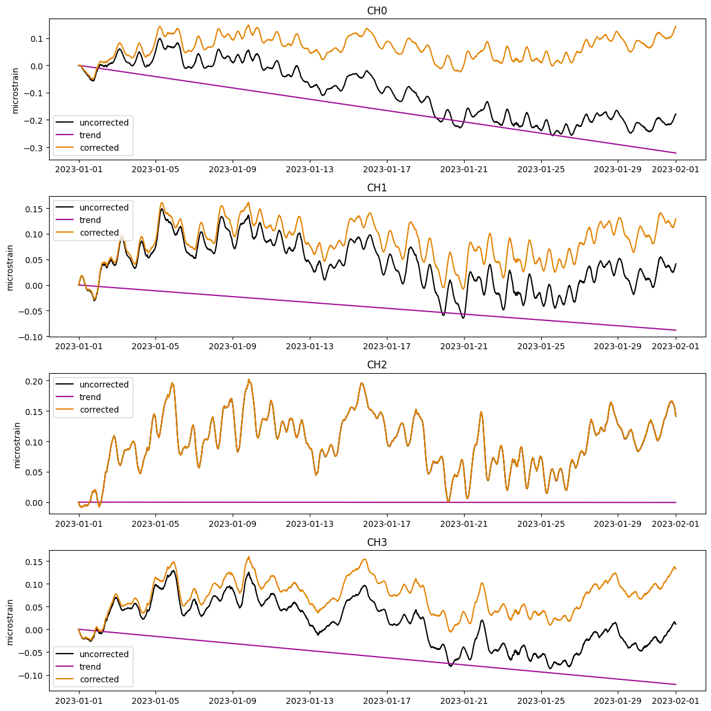
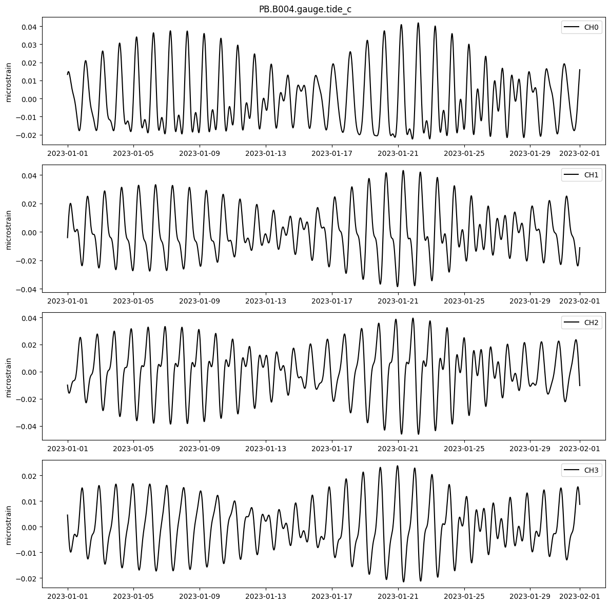
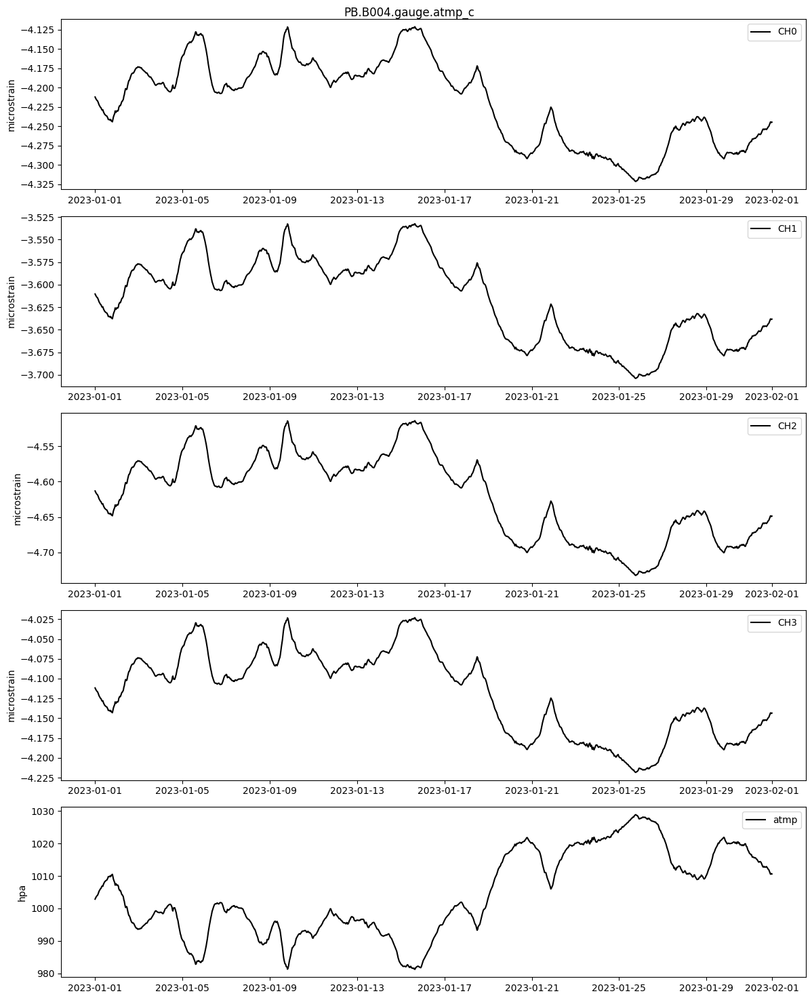
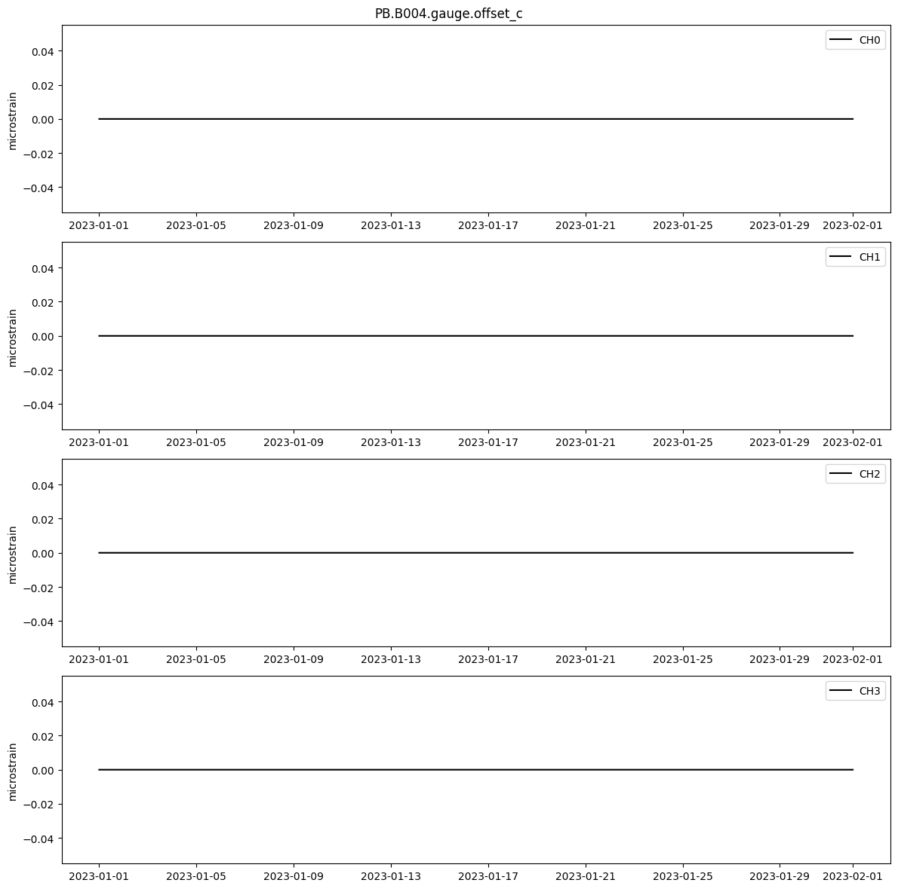
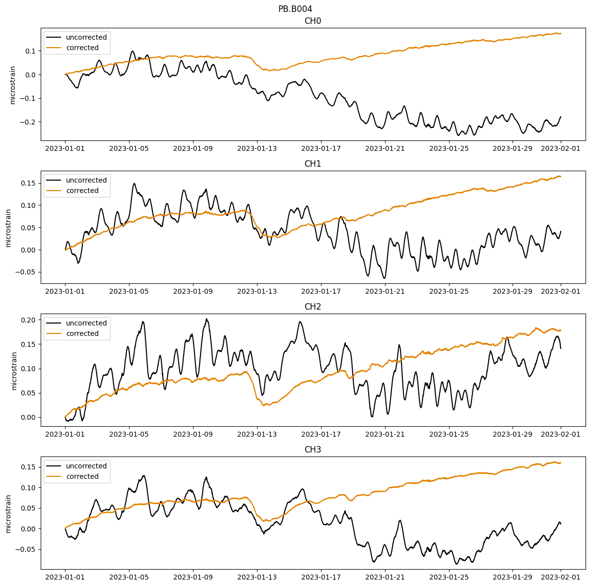

Example of running level 2 processing steps
starts with 10 min RS* data to speed things up, but could use LS* and ts.decimate_1s_to_300s()
[1]:
import numpy as np
import pandas as pd
from earthscopestraintools.mseed_tools import ts_from_mseed
from earthscopestraintools.gtsm_metadata import GtsmMetadata
from earthscopestraintools.timeseries import Timeseries, plot_timeseries_comparison
import logging
logger = logging.getLogger()
logging.basicConfig(
format="%(message)s", level=logging.INFO
)
Download 1hz counts, downsample to 300s and convert to microstrain
[2]:
network = 'PB'
station = 'B004'
meta = GtsmMetadata(network,station)
[3]:
start="2023-01-01T00:00:00"
end = "2023-02-01T00:00:00"
strain_raw = ts_from_mseed(network=network, station=station, location='T0', channel='LS*', start=start, end=end)
strain_raw.stats()
strain_raw.plot(type='line')
PB B004 Loading T0 LS* from 2023-01-01T00:00:00 to 2023-02-01T00:00:00 from Earthscope DMC miniseed
Trace 1. 2023-01-01T00:00:00.000000Z:2023-02-01T00:00:00.000000Z mapping LS1 to CH0
Trace 2. 2023-01-01T00:00:00.000000Z:2023-02-01T00:00:00.000000Z mapping LS2 to CH1
Trace 3. 2023-01-01T00:00:00.000000Z:2023-02-01T00:00:00.000000Z mapping LS3 to CH2
Trace 4. 2023-01-01T00:00:00.000000Z:2023-02-01T00:00:00.000000Z mapping LS4 to CH3
Found 0 epochs with nans, 1644.75 epochs with 999999s, and 0 missing epochs.
Total missing data is 0.06%
Converting missing data from 999999 to nan
Converting 999999 values to nan
Found 1644 epochs with nans, 0.0 epochs with 999999s, and 0 missing epochs.
Total missing data is 0.06%
PB.B004.T0.LS*
| Channels: ['CH0', 'CH1', 'CH2', 'CH3']
| TimeRange: 2023-01-01 00:00:00 - 2023-02-01 00:00:00 | Period: 1s
| Series: raw| Units: counts| Level: 0| Gaps: 0.06%
| Epochs: 2678401| Good: 2676756.25| Missing: 1644.75| Interpolated: 0.0
| Samples: 10713604| Good: 10707025| Missing: 6579| Interpolated: 0

[4]:
decimated_counts = strain_raw.decimate_1s_to_300s()
Decimating to 300s
Interpolating data using method=linear and limit=3600
Found 0 epochs with nans, 0.0 epochs with 999999s, and 0 missing epochs.
Total missing data is 0.0%
[5]:
name = f"{network}.{station}.gauge.microstrain"
gauge_microstrain = decimated_counts.linearize(reference_strains=meta.reference_strains, gap=meta.gap, name=name)
gauge_microstrain.stats()
gauge_microstrain.plot()
Converting raw counts to microstrain
Found 0 epochs with nans, 0.0 epochs with 999999s, and 0 missing epochs.
Total missing data is 0.0%
PB.B004.gauge.microstrain
| Channels: ['CH0', 'CH1', 'CH2', 'CH3']
| TimeRange: 2023-01-01 00:00:00 - 2023-02-01 00:00:00 | Period: 300s
| Series: microstrain| Units: microstrain| Level: 1| Gaps: 0.0%
| Epochs: 8929| Good: 8928.0| Missing: 0.0| Interpolated: 1.0
| Samples: 35716| Good: 35712| Missing: 0| Interpolated: 4

Trend correction
[6]:
name = f"{network}.{station}.gauge.trend_c"
trend_c = gauge_microstrain.linear_trend_correction(name=name)
#trend_c.plot()
corrected = gauge_microstrain.apply_corrections([trend_c])
plot_timeseries_comparison([gauge_microstrain, trend_c, corrected], names=['uncorrected', 'trend', 'corrected'], zero=True)
Calculating linear trend correction
Trend Start: 2023-01-01 00:00:00
Trend Start: 2023-02-01 00:00:00
Found 0 epochs with nans, 0.0 epochs with 999999s, and 0 missing epochs.
Total missing data is 0.0%
Applying corrections
Found 0 epochs with nans, 0.0 epochs with 999999s, and 0 missing epochs.
Total missing data is 0.0%

Tidal correction
[7]:
name = f"{network}.{station}.gauge.tide_c"
tide_c = gauge_microstrain.calculate_tide_correction(tidal_parameters=meta.tidal_params, longitude=meta.longitude, name=name)
tide_c.plot()
#tide_corrected = gauge_microstrain.apply_corrections([tide_c])
#plot_timeseries_comparison([gauge_microstrain, tide_corrected], names=['uncorrected', 'atmp_corrected'], zero=True)
Calculating tide correction
WARNING: The requested image's platform (linux/amd64) does not match the detected host platform (linux/arm64/v8) and no specific platform was requested
WARNING: The requested image's platform (linux/amd64) does not match the detected host platform (linux/arm64/v8) and no specific platform was requested
WARNING: The requested image's platform (linux/amd64) does not match the detected host platform (linux/arm64/v8) and no specific platform was requested
WARNING: The requested image's platform (linux/amd64) does not match the detected host platform (linux/arm64/v8) and no specific platform was requested
Found 0 epochs with nans, 0.0 epochs with 999999s, and 0 missing epochs.
Total missing data is 0.0%

Pressure correction
[8]:
atmp_raw = ts_from_mseed(network=network, station=station, location='*', channel='RDO',
start=start, end=end, period=60*30, scale_factor=0.001, units='hpa')
# atmp_raw.stats()
# atmp_raw.quality_stats()
# atmp_raw.plot()
atmp = atmp_raw.interpolate(new_index=strain_raw.data.index, series='hpa')
# atmp.stats()
# atmp.quality_stats()
# atmp.plot()
name = f"{network}.{station}.gauge.atmp_c"
atmp_c = atmp.calculate_pressure_correction(meta.atmp_response, name=name)
atmp_c.plot(atmp=atmp)
#atmp_corrected = gauge_microstrain.apply_corrections([atmp_c])
#atmp_corrected.plot()
#plot_timeseries_comparison([gauge_microstrain, atmp_corrected], names=['uncorrected', 'atmp_corrected'], zero=True)
PB B004 Loading * RDO from 2023-01-01T00:00:00 to 2023-02-01T00:00:00 from Earthscope DMC miniseed
Trace 1. 2023-01-01T00:00:00.000000Z:2023-02-01T00:00:00.000000Z mapping RDO to atmp
Found 0 epochs with nans, 0.0 epochs with 999999s, and 0 missing epochs.
Total missing data is 0.0%
Converting missing data from 999999 to nan
Converting 999999 values to nan
Found 0 epochs with nans, 0.0 epochs with 999999s, and 0 missing epochs.
Total missing data is 0.0%
Interpolating data using method=linear and limit=3600
Found 0 epochs with nans, 0.0 epochs with 999999s, and 0 missing epochs.
Total missing data is 0.0%
Calculating pressure correction
Found 0 epochs with nans, 0.0 epochs with 999999s, and 0 missing epochs.
Total missing data is 0.0%

Offset correction
[9]:
name = f"{network}.{station}.gauge.offset_c"
offset_c = gauge_microstrain.calculate_offsets(name=name)
offset_c.plot()
Calculating offsets using cutoff percentile of 0.75 and limit multiplier of 10.
Using offset limits of [0.003454, 0.00327, 0.003936, 0.002536]
Found 0 epochs with nans, 0.0 epochs with 999999s, and 0 missing epochs.
Total missing data is 0.0%

Plot corrections
[10]:
title=f"{network}.{station}"
gauge_corrected = gauge_microstrain.apply_corrections([tide_c, atmp_c, offset_c, trend_c])
plot_timeseries_comparison([gauge_microstrain, gauge_corrected], title=title, names=['uncorrected', 'corrected'], zero=True)
Applying corrections
Found 0 epochs with nans, 0.0 epochs with 999999s, and 0 missing epochs.
Total missing data is 0.0%

Convert to regional strain, apply corrections
[11]:
calibration_matrix = meta.strain_matrices['lab_strain_matrix']
regional_microstrain = gauge_microstrain.apply_calibration_matrix(calibration_matrix)
regional_microstrain.stats()
regional_microstrain.plot()
---------------------------------------------------------------------------
KeyError Traceback (most recent call last)
Cell In[11], line 1
----> 1 calibration_matrix = meta.strain_matrices['lab_strain_matrix']
2 regional_microstrain = gauge_microstrain.apply_calibration_matrix(calibration_matrix)
3 regional_microstrain.stats()
KeyError: 'lab_strain_matrix'
[12]:
regional_tide_c = tide_c.apply_calibration_matrix(calibration_matrix)
regional_trend_c = trend_c.apply_calibration_matrix(calibration_matrix)
regional_atmp_c = atmp_c.apply_calibration_matrix(calibration_matrix)
regional_offset_c = offset_c.apply_calibration_matrix(calibration_matrix)
---------------------------------------------------------------------------
NameError Traceback (most recent call last)
Cell In[12], line 1
----> 1 regional_tide_c = tide_c.apply_calibration_matrix(calibration_matrix)
2 regional_trend_c = trend_c.apply_calibration_matrix(calibration_matrix)
3 regional_atmp_c = atmp_c.apply_calibration_matrix(calibration_matrix)
NameError: name 'calibration_matrix' is not defined
[13]:
title=f"{network}.{station}"
regional_corrected = regional_microstrain.apply_corrections([regional_tide_c, regional_atmp_c, regional_offset_c, regional_trend_c])
plot_timeseries_comparison([regional_microstrain, regional_corrected], title=title, names=['uncorrected', 'corrected'], zero=True)
---------------------------------------------------------------------------
NameError Traceback (most recent call last)
Cell In[13], line 2
1 title=f"{network}.{station}"
----> 2 regional_corrected = regional_microstrain.apply_corrections([regional_tide_c, regional_atmp_c, regional_offset_c, regional_trend_c])
3 plot_timeseries_comparison([regional_microstrain, regional_corrected], title=title, names=['uncorrected', 'corrected'], zero=True)
NameError: name 'regional_microstrain' is not defined
Plot corrected data against rainfall data
[14]:
rainfall = ts_from_mseed(network=network, station=station, location='*', channel='RRO',
start=start, end=end, period=60*30, scale_factor=0.0001, units='mm/30m')
regional_corrected.plot(rainfall=rainfall)
regional_corrected.stats()
PB B004 Loading * RRO from 2023-01-01T00:00:00 to 2023-02-01T00:00:00 from Earthscope DMC miniseed
Trace 1. 2023-01-01T00:00:00.000000Z:2023-02-01T00:00:00.000000Z mapping RRO to rain
Found 0 epochs with nans, 0.0 epochs with 999999s, and 0 missing epochs.
Total missing data is 0.0%
Converting missing data from 999999 to nan
Converting 999999 values to nan
Found 0 epochs with nans, 0.0 epochs with 999999s, and 0 missing epochs.
Total missing data is 0.0%
---------------------------------------------------------------------------
NameError Traceback (most recent call last)
Cell In[14], line 3
1 rainfall = ts_from_mseed(network=network, station=station, location='*', channel='RRO',
2 start=start, end=end, period=60*30, scale_factor=0.0001, units='mm/30m')
----> 3 regional_corrected.plot(rainfall=rainfall)
4 regional_corrected.stats()
NameError: name 'regional_corrected' is not defined
[ ]: